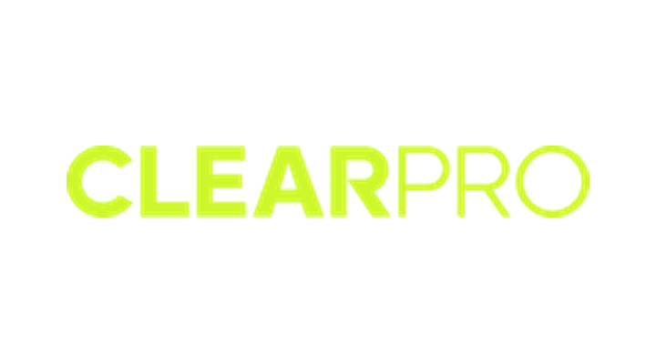
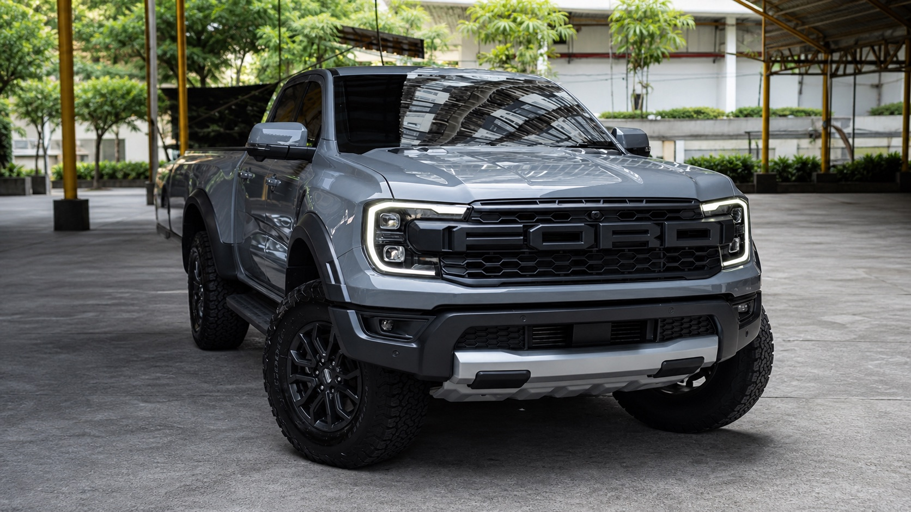

PPF creates a sacrificial barrier against stone chips, light scratches, road debris, bug residue, and other everyday hazards that would otherwise reach the original paint.
Every “after” below is a proposal, not shipped code. The “before” columns reproduce the
live rules from src/styles/bredesign.css verbatim, so the comparison is honest
rather than flattering. Nothing here is in the app until you say which ones to take.
Colours are the brand tokens only — no new palette is introduced.
Your note: “FORMAT IS OFF” — arrow pointing at the lede column.
I first assumed this was vertical alignment — the grid uses
align-items:center — but I measured it on the live page and
that only costs about 22px, which is not what you would have circled.
What your arrow actually lands on is the text wrap. The lede runs to a 52ch
measure, so the bold phrase “Road debris, UV radiation, and environmental fallout” breaks across
two lines mid-phrase, and the paragraph ends on a single orphan word — “them.” — sitting alone.
That is the ragged, unfinished look. The proposal tightens the measure to 46ch, adds
text-wrap:pretty so the last line cannot orphan, and top-aligns
the columns while it is there.
Why paint protection film
Your car is most vulnerable the moment it leaves the dealership. Road debris, UV radiation, and environmental fallout attack your paint every single day — quietly taking resale value and the finish you paid for with them.
Why paint protection film
Your car is most vulnerable the moment it leaves the dealership. Road debris, UV radiation, and environmental fallout attack your paint every single day — quietly taking resale value and the finish you paid for with them.
Check me on this one: this is the only annotation I had to interpret. If “format is off” meant something else — the column widths, the button row, the gap between the two halves — say which and I will redraw it. Everything else on this page is a direct reading of your note.
Your note: “ADD ICONS TO BE MORE ENGAGING” — on both the PPF and the ceramic grid.
Shown above on PPF and below on ceramic. Beyond the icon itself, the card titles move from 11px / 800 uppercase — which is a label size, not a heading size — to 13.5px, which is what makes the four cards scannable instead of a grey block. The tiles also gain a gap, a border radius and a hover lift, so they read as four things rather than one table.
Your note: “ADD MORE BRANDING OF CLEARPRO? IMAGE? SOME PICTURES OF THEIR LOGO OR BRANDING?”
The strip currently sets the word “ClearPro” in our own display face — so it is our typography
wearing their name, which is the opposite of a partner credit. The proposal uses
their actual mark (already in the repo at src/assets/brands/color/clearpro.png),
adds a product frame, and pulls the spec out of the paragraph into figures a buyer can scan.
Film partner
ClearPro
ClearPro’s optical TPU film combines a self-healing top coat, hydrophobic performance, high clarity, and resistance to yellowing. Its current UltraClear technical sheet lists a nominal 7.5 mil construction.
Explore ClearPro technology ↗
Film
partner
ClearPro’s optical TPU film combines a self-healing top coat, hydrophobic performance, high clarity, and resistance to yellowing.

Needs you: the product frame above is a placeholder pulled from the repo. If ClearPro has supplied brand photography or a media kit, send it and it drops straight in. Also worth checking that using their logo this prominently is within whatever distributor agreement you have.
Your note: “FONT IS NOT READABLE — REPLACE FONT?”
You are right, and it is measurable. The questions are set in Benzin at weight 750 — a display face built for three-word headlines, doing eight-word sentences in reverse on navy. Its counters close up at that weight and the whole list turns into one texture. The proposal keeps Benzin for the section heading and moves the questions to Gilmer 700, the body face already used everywhere else, at 17.5px with more line height.
PPF creates a sacrificial barrier against stone chips, light scratches, road debris, bug residue, and other everyday hazards that would otherwise reach the original paint.
PPF creates a sacrificial barrier against stone chips, light scratches, road debris, bug residue, and other everyday hazards that would otherwise reach the original paint.
Note: this page cannot load Benzin or Gilmer from the app, so both columns fall back to a system face here — the sizes and weights are accurate but the letterforms are not. Judge this one on the live site once it is in; the argument is about which face does which job.
Your notes, three of them: “REMOVE” struck through WHAT IS · “BIGGER FONT” on the eyebrow · “DURABLE THAN YOUR REGULAR WAX” arrowed at A WAX.
The first two are unambiguous and done below: the label reads CERAMIC COATING and goes from 11px to 14px with wider tracking. The third I have read as a sub-line rather than a change to the headline itself — “BEYOND A WAX.” is the hook, and the durability claim is the thing it is promising. See the question underneath.
What is ceramic coating
Ceramic coating
Far more durable than your regular wax.
One question: did you mean the durability line as a sub-head under the headline (what I have drawn), or did you want the headline itself rewritten to say it — something like “MORE DURABLE THAN YOUR REGULAR WAX.”? Tell me which and I will redraw. Note the second reading loses the short two-line shape the hero is built around.
Your note: “MAKE THIS POP OFF MORE!” — circled on both warranty blocks.
The badge is currently a translucent panel with a 1px border, sitting on a busy photograph — it is the most important number on the card and the least visible thing on it. The proposal puts it on solid brand blue with a cast shadow, takes the numeral from 34px to 60px, and moves “unlimited recoating” into the badge as a chip so the whole offer is one object instead of three stacked ones.
Deeper gloss and stronger water repellency, covered for five years.
Our highest gloss and longest paint preservation, covered for eight years.
Deeper gloss and stronger water repellency, covered for five years.
Our highest gloss and longest paint preservation, covered for eight years.